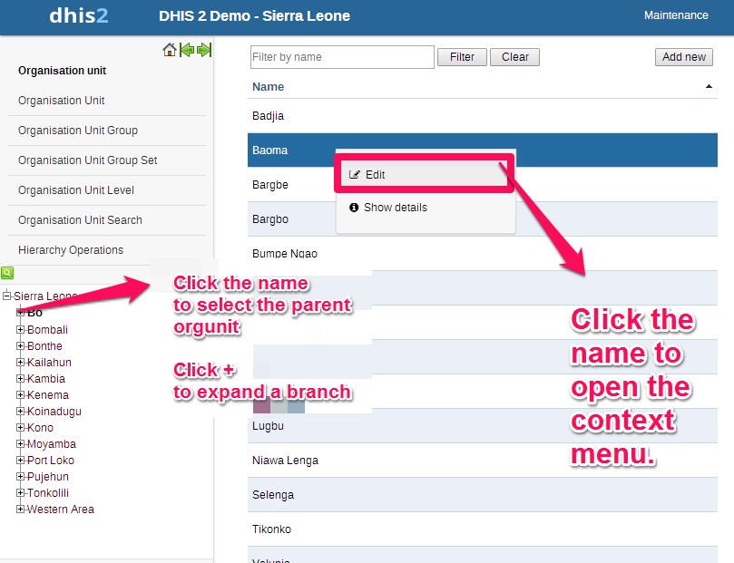

This is where you can create organisation units (from now on referred to as orgunits) and build up the orgunit hierarchy. Orgunits are added one by one as either root unit or a child of a selected unit. The left side menu represents the current organisational hierarchy and if you select a unit there you will see its children listed in the main list of orgunits in the middle of the screen. When an orgunit is selected in the left side menu you can also add new child units to it. To locate an orgunit in the hierarchy you can either navigate through the tree by expanding the branches (click on the + symbol), or search for it by opening the search field (click the green symbol above the root of the hierarchy). In search you can either search for the orgunit name or its code, both will only show exact matches (case-insensitive). To add a new orgunit first select its parent and then click on the Add new button in the top right corner of the list of orgunits. To add a new root orgunit make sure no orgunit is selected in the menu and click on "Add new". The details of adding a new orgunit are explained in the section called “Editing organisation units”.
To edit the properties of an existing orgunit first select its parent (if any) in the left side menu, then locate the orgunit in the listed orgunits, and click on the name of the orgunit that you want to modify. A context menu will appear, and you should select "Edit". Refer to the screen-shot below to see how it works.
|  |
The following properties can be defined in the Edit (or Create new) window:
Name: Define the precise name of the orgunit in this field. Each orgunit must have a unique name.
Short name: Typically, an abbreviation of the full name. This attribute is often used in reports to display the name of the orgunit, where there is limited space available.
Code: In many countries, orgunits are assigned a code. This code can be entered in this field.
Description: A description can be a longer piece of text which can be used to describe the organisationunit.
Opening date: Used to control which orgunits that where existing at a point in time, e.g. when analysing historical data. This attribute is required. The default date for opening of organisation units is 1900-01-01, but can be set to any date (even dates which occur in the future).
Registers data: This property is used to identify which orgunits that can register data or not. Sometimes administrative orgunits at higher levels in the hierarchy are not supposed to register any data. This can help control the data entry process as only orgunits with this property set to Yes will be available for data entry.
Comment: Any additional information that you would like to add can be put here.
Coordinates: This field is used to create the maps in the GIS module. Paste in the coordinates of the orgunit in this field, either a polygon (for orgunits that represent an administrative boundary) or a point (for health facilities). Without this information the GIS module will not work. It might be more efficient to import these coordinates later as a batch job for all orgunits using the import module. See the GIS chapter for more details.
URL: You can use this field to insert a URL link to an external web site that has additional information about this specific orgunit.
Contact information: A contact person, address, email, and phone number can be entered in these fields. This information can be vital for facilitating follow-up.
Datasets: Datasets can be assigned to organisational units here. See the chapter on "Data sets" for more detailed information on assigning datasets to organisational units.
Organisation unit groups: Assignments to organisational units group sets can be assigned through the individual drop-down boxes which appear for each group set.
In addition to all of the options listed above, if you have added any attributes to organisation units, your custom attributes may also appear there. Please refer to the section on "Attributes" for more information about how attributes can be used.
Group sets can be understood as a flexible tool to add more categorisation to orgunits. Any number of group sets can be added, but as a default start all databases will have the two group sets "Type" and "Ownership". Using these group sets will simplify how reporting is done, and facilitate analysis through the use of tools such as Excel PivotTables.
While a group set like "Type" describes a measure dimension, the actual categories are represented by the groups, and the categorisation of an orgunit through the orgunit's group memberships. This can be understood as a parallel hierarchy of orgunits with the group set as the root ("Type"), the groups at level 2 (e.g. "Clinic", "Hospital", "Dispensary"), and the actual orgunits at level 3. The group set can as such provide additional information and dimensionality to the data analysis as data is easily filtered, organised, or aggregated by groups within a group set.
For this aggregation to work without any duplication in the data some rules are necessary. A group set is always exclusive, which means that an orgunit cannot be member of more than one group in a group set. Therefore, when creating a new organisational unit, you will only be allowed to select a single organisational group membership for each group set. Furthermore it is possible to define whether a group set is compulsory or not, which will affect the completeness of the data when analysing data using group sets. Compulsory means that ALL orgunits must be member of a group in that group set.
We recommend that you approach the orgunit grouping in the following sequence (and one group set at a time):
Define a new group set, such as "Location".
Add new groups (such as "Urban", "Rural" and "Peri-urban"). Once all groups have been defined, return to the organisational unit group set and assign each of the desired groups to the group set.
Go back to each group, one by one, go to edit mode and assign the orgunits that should be member of the group. Should you follow this route, you can place multiple organisation units at a time in a group. However, you must be careful not to place the same organisational units in two groups which itself is a member of an organisation unit group set. This will result in a data integrity violation. If you have organisation unit groups which are not exclusive, they should not be members of a group.
A better way to ensure that you do not mistakenly assign an organisation unit to multiple members of a group set is you can use the edit feature of each organisational unit to assign memberships to each group set. You will only be able to assign a single organisation unit at a time however.
It is important to keep in mind when using the "Organisational unit group" set function, that unless great care is taken, organisational units can be assigned to multiple groups of a group set. This can be checked through the "Data Integrity" module, which will report which organisational units are not members of a compulsory organisational unit group set, and which organisational units have been assigned to more than one member of a group set.
Click on the name of the organisation unit group set you wish to modify, followed by "Edit" from the context menu which will appear. The following properties can be defined in the Edit (or Create new) window:
Name: Provide a precise name for the group set.
Description: Describe the phenomena the group set is measuring/capturing.
Compulsory: Indicate whether ALL orgunits need to be member of a group in this group set or not.
Available groups/Selected groups: Here you assign groups to your group set by using the arrow buttons to move highlighted groups between the two lists (/selected). If no groups appear in the list then you must go to orgunit groups and create new groups there first. Note that assigning groups that will violate the exclusive rule on group sets is not possible, e.g. adding a group that already has assigned an orgunit that again is already member of a group that has already been selected by this group set, will not be possible since one orgunit will end up with two group memberships in the same group set. To avoid such situations we recommend first adding groups to group sets, and then orgunits to groups.
This function will allow you to add new and manage existing organisation groups and their memberships. It can be accessed by choosing Maintenance->Organisation units->Organisation Unit group from the main menu. To add a new orgunit group click on the "Add new" button in the top right corner of the list of groups.
Click on name of the orgunit group that you want to modify and then select "Edit" from the context menu which will appear. The following properties can be defined in the Edit (or Create new) window:
Name: Provide a precise,unique and descriptive name for the orgunit group.
Short name: This name should be less than 25 characters, and will be used in certain places in DHIS2 when the number of characters needs to be restricted due to space constraints.
Symbol: Select a symbol which will be used to display the organisation unit (points only) when the layer is displayed in the GIS.
Organisation unit tree selection: This is where you assign orgunits to the group. The tree supports multiple selection so select all the orgunits that you want to add (the selected ones appear with orange color) and click on "Save". Click on "Cancel" to undo your changes and return to the list of orgunit groups. Use the "Select at level" button and dropdown if you want to select all orgunits at a specific level in the hierarchy (e.g. all districts).
Datasets: If you assign a dataset to an organisational unit group, all organisation units which are currently assigned to the dataset will be also present in this organisation unit group.
Here you specify a contextual name for each level in the hierarchy, e.g. "Country", "Province", "District", "Health Facility", and these names will be used all over the application where levels are referred to. This page will take some time to load if the orgunit hierarchy is very big.
Here you can move orgunits around in the hierarchy by changing the parent of a selected orgunit. This process is done in three steps:
1. Select the orgunit you want to move (in the hierarchy in the left side menu) and click "Confirm" under the "Select an organisation unit to move" label.
2. Select the new parent orgunit (again by using the hierarchy in the left side menu). If no parent is selected then the orgunit will be moved up to root level (top of the hierarchy). Click on the "Confirm" button under the "Select the new parent organisation unit for the one to move" label.
3. Click on the "Move" button to apply your changes to the hierarchy.
Your changes will be immediately reflected in the left side menu hierarchy. At any time in the process (before hitting the Move button) you can click on the "Reset" button to deselect orgunit to move and the new parent.